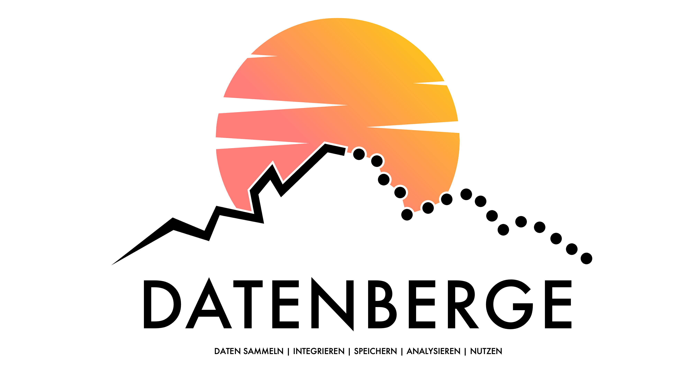

Herzlich willkommen! Ich bin Data Scientist und Hochschulprofessor für Data Science. In meiner Forschung und Lehre dreht sich alles darum, wie aus rohen Daten wertvolle Erkenntnisse entstehen.
Auf meinem YouTube-Kanal nehme ich dich mit auf eine Reise entlang der gesamten Daten-Wertschöpfungskette: Von der ersten Datenverarbeitung über die Analyse bis hin zur Implementierung komplexer Modelle. Schau dir unten mein aktuellstes Video an!